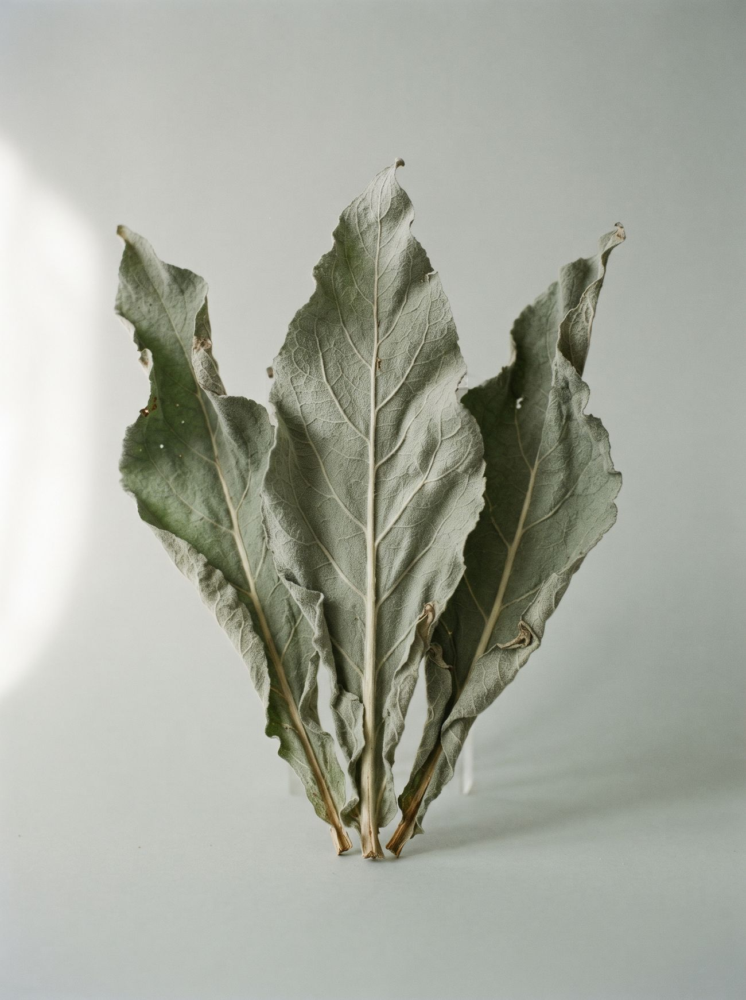

Daniel Amon
Ich plane
mit Erde
an den Händen.
01 / HaltungWie Praxis und Planung einander prüfen

I
Beobachten
Ob eine Pflanze am richtigen Standort gedeiht, zeigt sich oft erst nach einer Saison. Genau diese Beobachtung macht für mich den Reiz aus.
II
Selber machen
Hochbeete, Pflaster, Beleuchtung: Ich arbeite mit vorhandenen Materialien und lerne am fertigen Ding, was der Plan nicht verrät.
III
Systematisch denken
Organisation, Dokumentation und Prozessdenken aus zwanzig Jahren Berufspraxis, jetzt mit QGIS und Planungsmethodik verbunden.
02 / PflanzgeneratorInteraktiv
Pflanzdir was.
Vom strengen Raster zur gewachsenen Gesellschaft: Arten mischen, Dichte und Streuung ändern, die Zeit laufen lassen. Jeder Wurf ist neu.
Artenanteil